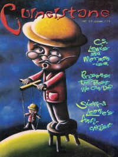

CMnexus
:
Contemporary Christian culture, music, and media.
Magazines
Profiles
Dove Awards
cmnexus.org
CM
nexus
→
Magazine list
→
Cornerstone
→
Issues
Cornerstone
2000, vol. 29, iss. 119
< -- Prev
Issue list
Next -- >
Cover

Writers in this Issue
Don Hill
Glenn Kaiser
John J. Thompson
Jon Trott
Christopher Wiitala
Interview:
"The Blues and God" by Jon Trott
Glenn Kaiser
Album Review:
Glenn Kaiser
-
Winter Sun
by John J. Thompson
Josh Caterer
-
Why Me
by Christopher Wiitala
Frolic
-
Permafrost
by Don Hill
Denison Witmer
-
Safe Away
by Christopher Wiitala
Seeds
-
Parables Prayers & Songs
by John J. Thompson
Extol
-
Undeceived
by Don Hill
In A Lonely Place
-
Unit 731
by Christopher Wiitala
The People
-
The Premise Is Sound
by Christopher Wiitala
The Wayside
-
Farm
by Glenn Kaiser
Anaphylaxis
-
reverb
,
American Music
by Don Hill
The Deadlines
-
The Death And Life Of...
by Christopher Wiitala
Audio Paradox
-
The Iniquity of Time
by Don Hill
Relevant Links
Official web site of Cornerstone
You may be able to find
Cornerstone
in a library near you:
check
Worldcat
< -- Prev
Issue list
Next -- >
CMnexus
(noun)
The magazine index
of modern music
and Christianity
© 2011 CMnexus. Last updated August 2025.
Contact:
Rants and other correspondence to:
editor -AT- cmnexus
-DØT- org
About